Click on the image to open the interactive full-size view of the plot.
In the interactive view, click in the legend to hide a line, double click to see only this line.
Back to the reports index.
Master Nodes Load
Sutest cluster
These plots shows the CPU and memory usage of the Kubernetes API Server and ETCD, running on the Master nodes of the cluster.
ApiServer subsystem
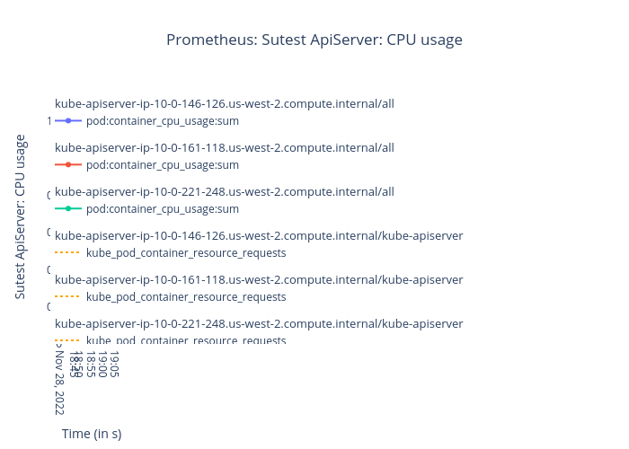
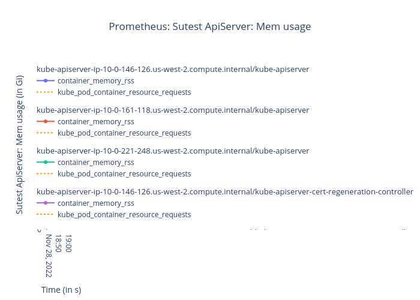
ETCD subsystem
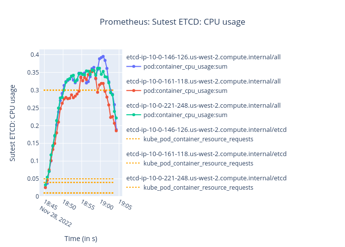
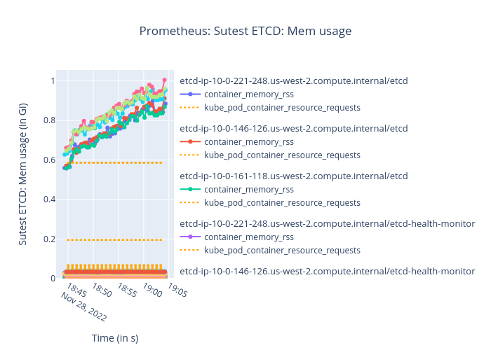
CPU usage
These plots shows the CPU usage of the master nodes.
The first plot show all the available modes, while the second one shows only the idle time (higher is better).
The Y scale is arbitrary, but for a given node, the sum of all the modes at a given time indicate 100% of the CPU.
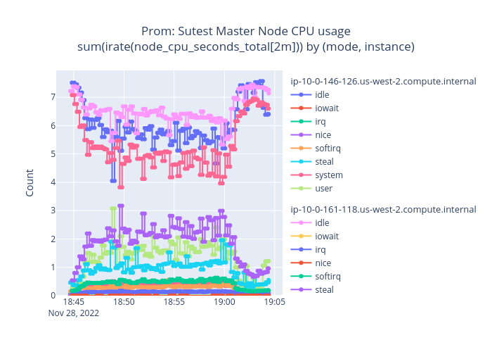
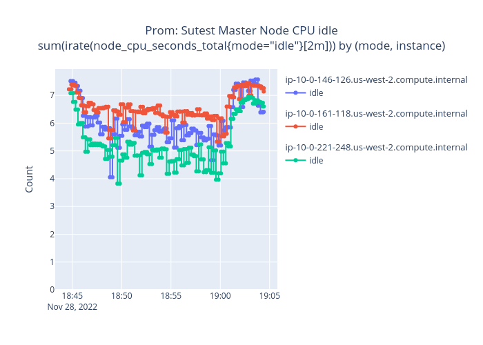
APIServer requests duration
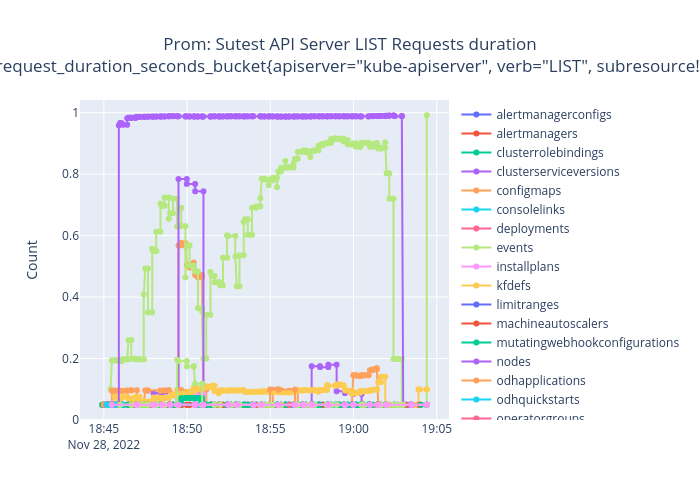
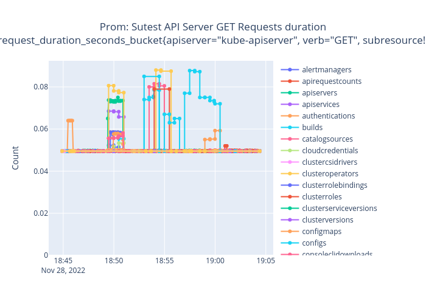
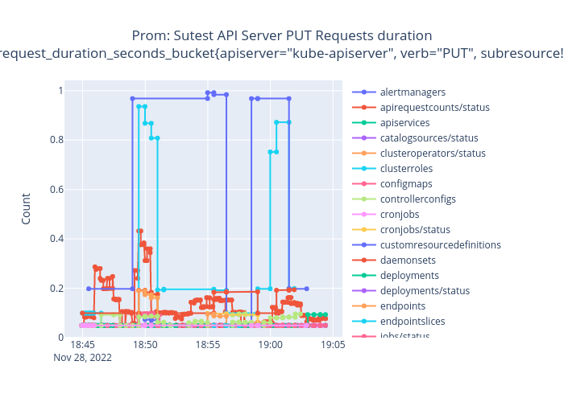
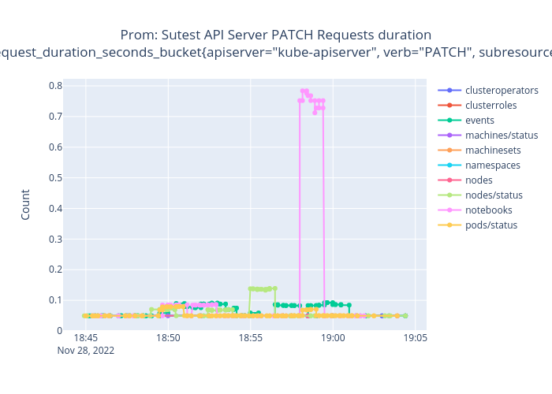
API Server HTTP return codes
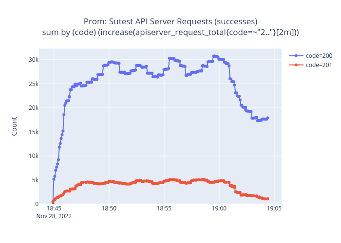
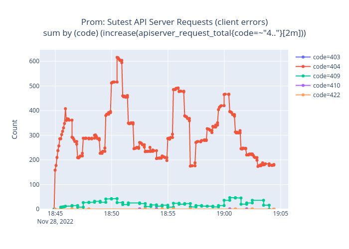
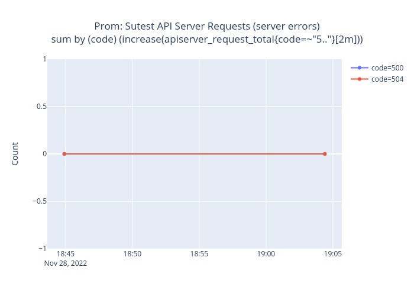
Driver cluster
These plots shows the CPU and memory usage of the Kubernetes API Server and ETCD, running on the Master nodes of the cluster.
ApiServer subsystem
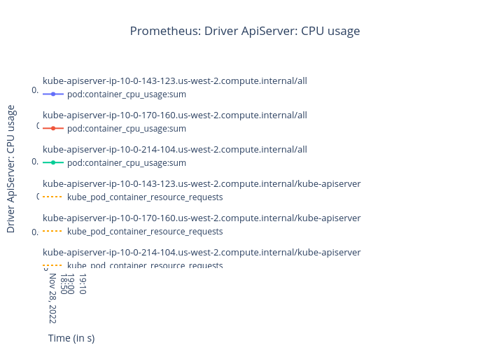
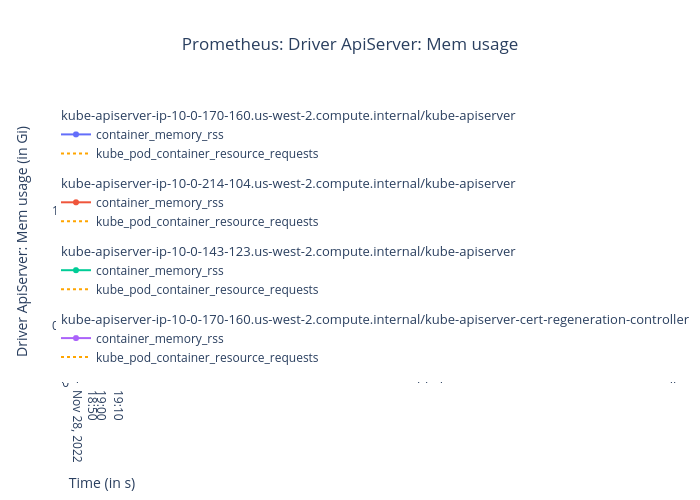
ETCD subsystem
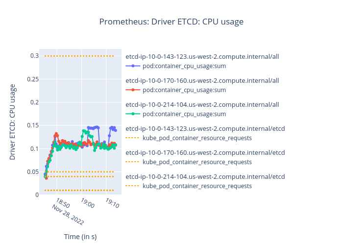
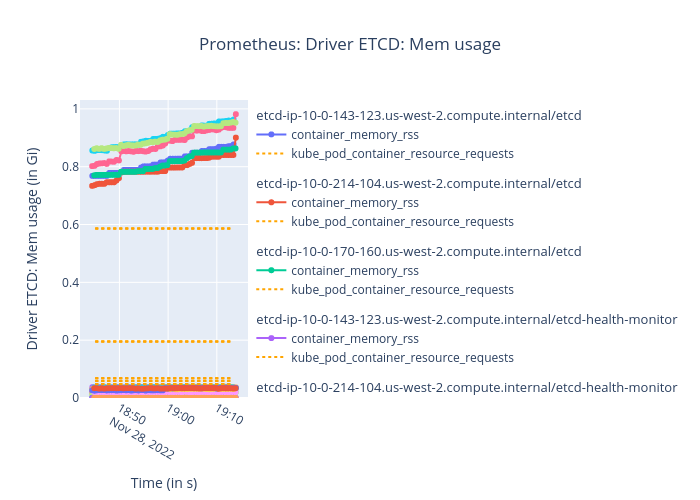